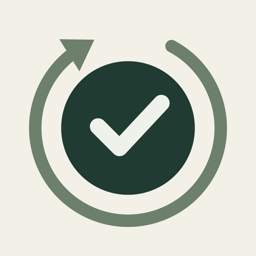

HuskHjælp til Husk.
Kom i gang
Hvad kræver Husk?
En iPhone med iOS 18 eller nyere, logget ind på iCloud (Indstillinger → dit navn). Til Apple Watch kræves watchOS 11 eller nyere. Alle, der skal dele et sted, skal være logget ind på iCloud.
Hvordan inviterer jeg familien?
- Gå til Steder, og tryk på stedet (fx Hjem).
- Tryk Invitér til …, og send linket via Beskeder eller mail – eller kopiér det.
- Modtageren installerer Husk og trykker på linket. Stedet hentes fra iCloud.
Linket åbner ikke Husk – hvad gør jeg?
Kopiér linket, åbn Husk, og vælg Steder → Tilslut med invitationslink (eller Jeg har fået en invitation ved første opstart), og indsæt det.
Kan jeg have flere steder?
Ja. Vælg Steder → Nyt sted, fx Arbejde eller Klub. Hvert sted har sine egne opgaver og sit eget fællesskab. I Aktuelle vælger du "Alle steder" eller ét sted ad gangen.
Opgaver og påmindelser
Hvornår dukker en opgave op i Aktuelle?
Som standard 3 dage før fristen. Det kan ændres for hele stedet (under Steder) eller for den enkelte opgave. Overskredne opgaver bliver stående, til de er krydset af.
Jeg krydsede af ved en fejl
Tryk Fortryd i bjælken nederst, eller find afkrydsningen under Historik og tryk Fortryd. Fristen kommer tilbage hos alle.
Hvad er en vigtig opgave?
Slå Vigtig opgave til i redigeringen. Vigtige opgaver står øverst, er markeret med rødt og giver påmindelse også på fristdagen og de tre første dage efter, hvis de ikke er udført.
Jeg får ingen påmindelser
Tjek at påmindelser er slået til under Steder → Påmindelser på denne iPhone og i Indstillinger → Notifikationer → Husk. Påmindelsen kommer på det valgte klokkeslæt den dag, en opgave bliver aktuel.
Hvordan virker sæsoner?
Under Rediger → Sæsoner kan en opgave få et andet interval i en periode, fx hver uge om sommeren og hver 14. dag om efteråret – eller en pause. Det interval, der gælder på fristdagen, bruges.
Widget og Apple Watch
Hvordan tilføjer jeg widgetten?
Hold fingeren på hjemmeskærmen → Rediger → Tilføj widget → søg efter Husk → vælg størrelse. Hold fingeren på widgetten → Rediger widget for at vælge et bestemt sted. I mellem og stor størrelse kan du krydse af med ✓.
Hvordan får jeg Husk på mit ur?
Åbn Watch-appen på iPhonen → Tilgængelige apps → Husk → Installer. Uret henter selv stederne fra iCloud. Komplikationer tilføjes ved at holde fingeren på urskiven → Rediger.
Data
Hvor ligger mine data?
På dine enheder og i iCloud hos den, der har oprettet stedet. Husk har ingen server. Læs mere i privatlivspolitikken.
Hvordan sletter jeg alt?
Slet stederne i appen (Steder → stedet → Slet stedet), eller fjern data under Indstillinger → dit navn → iCloud → Administrer lagringsplads → Husk.
© 2026 Michael Skov Hejmadi · Privatlivspolitik